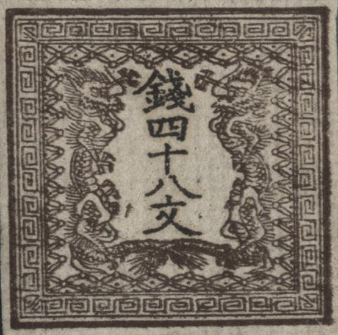
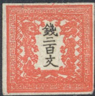
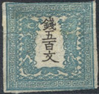
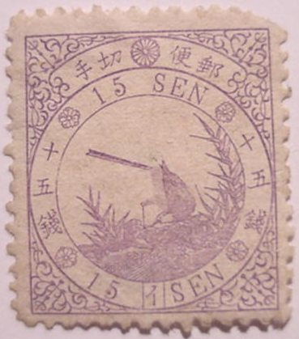
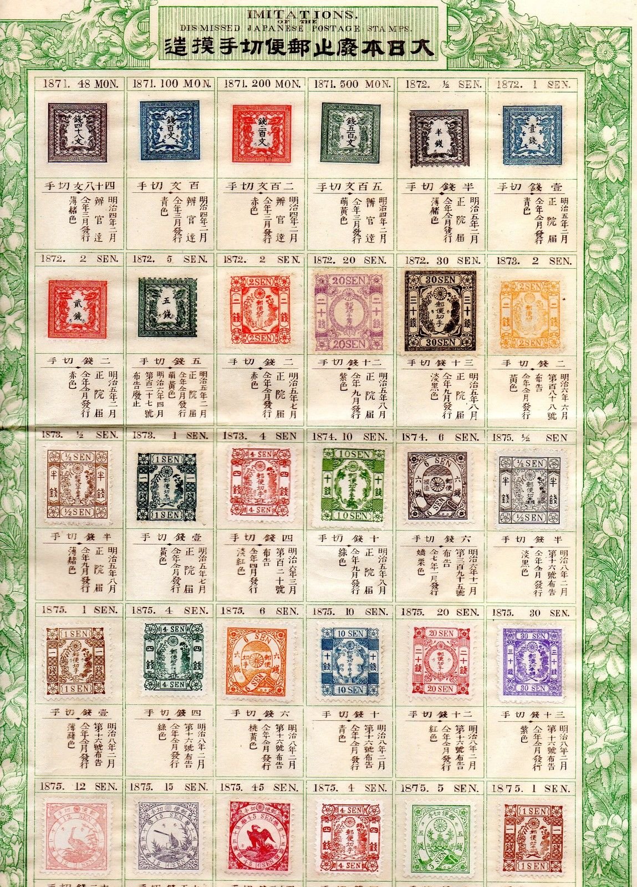

Genuine stamps
Return To Catalogue - Japan 1876-1899 - Japan 1900-1920 - Forgeries of 1871 issue - Spiro forgeries of the 1872 issue - Other forgeries of the 1872 issue - Forgeries of the 1874 issue and later issues - Miscellaneous
Note: on my website many of the
pictures can not be seen! They are of course present in the
catalogue;
contact me if you want to purchase it.
Currency: 1 yen = 100 sen = 1000 rin
Attention: many forgeries exist from the issues 1871-1875 see Forgeries of Japan. Among them forgeries made by Wada Kotaro, the Spiro Brothers, Hirose, and other unkown forgers. Warning: since I'm not an expert in this field, some of the stamps shown here might be forgeries! More information on forgeries can be found on the website: http://isjp.org/expert/index.html or www3.ns.sympatico.ca/mack.strathdee/index3.htm.
Imperforate, value in Mon (unity of weight)

Genuine stamps


48 m brown 100 m blue 200 m red 500 m blue Perforated, value in sen


1/2 s brown 1 s blue 2 s red 5 s blue
Value of the stamps |
|||
vc = very common c = common * = not so common ** = uncommon |
*** = very uncommon R = rare RR = very rare RRR = extremely rare |
||
| Value | Unused | Used | Remarks |
Value in Mon |
|||
| 48 m | R | RR | |
| 100 m | RR | RR | |
| 200 m | RR | RR | |
| 500 m | RR | RR | |
Value in Sen |
|||
| 1/2 s | R | RR | |
| 1 s | RR | RR | |
| 2 s | RR | RR | |
| 5 s | RR | RR | |
For Forgeries of this issue, click here.
1/2 s brown 1/2 s grey 1 s blue 1 s brown 2 s red 2 s yellow 4 s red 4 s green 10 s green 10 s blue 20 s violet 20 s red 30 s grey 30 s violet
Small varieties exists from the 1/2 s brown, the 1 s brown, the 2 s yellow and the 4 s green.

(With 'Mihon' or 'Specimen' overprint)
Value of the stamps |
|||
vc = very common c = common * = not so common ** = uncommon |
*** = very uncommon R = rare RR = very rare RRR = extremely rare |
||
| Value | Unused | Used | Remarks |
| 1/2 s brown | ** | ** | |
| 1/2 s grey | ** | ** | |
| 1 s blue | *** | ** | |
| 1 s brown | *** | ** | |
| 2 s red | *** | ** | |
| 2 s yellow | *** | * | |
| 4 s red | *** | ** | |
| 4 s green | *** | ** | |
| 10 s green | *** | *** | |
| 10 s blue | *** | ** | |
| 20 s violet | *** | *** | |
| 20 s red | ** | ** | |
| 30 s grey | R | *** | |
| 30 s violet | *** | *** | |
I;ve seen postal stationary, in the values 1 s green ans 2 s yellow, in the same design.
For Spiro forgeries of the 1872 issue, click here or here for other forgeries of the 1872 issue
5 s green (1876) 6 s violet 6 s orange
Value of the stamps |
|||
vc = very common c = common * = not so common ** = uncommon |
*** = very uncommon R = rare RR = very rare RRR = extremely rare |
||
| Value | Unused | Used | Remarks |
| 5 s | *** | *** | |
| 6 s violet | R | *** | |
| 6 s orange | *** | ** | |


(Genuine stamps)
12 s red 15 s lilac 45 s red
(Plate number 1 on a 45 s stamp; genuine)
Note: these stamps have platenumbers (between the value and 'SEN'). Three different plate numbers exist for each stamp.
Value of the stamps |
|||
vc = very common c = common * = not so common ** = uncommon |
*** = very uncommon R = rare RR = very rare RRR = extremely rare |
||
| Value | Unused | Used | Remarks |
| 12 s | *** | *** | |
| 15 s | *** | *** | |
| 45 s | *** | *** | |
The following sheets are so-called Tourist Sheet made by the forger Wada. They were called like this since they were often offered to tourists. The first sheet contains 8 forged dragon stamps, 36 forged cherry blossom stamps and 16 forged Koban stamps, all made by Wada. It also contains 19 genuine stamps.

Some forged cancels, made by the forger Fournier, as they can be
found in 'The Fournier Album of Philatelic Forgeries'. I don't
know on which forged stamps Fournier used these cancels. (Reduced
size).


{kind=link}
{kind=link}
{kind=link}
{kind=link}